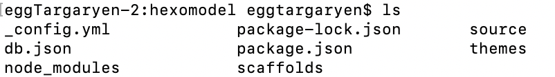
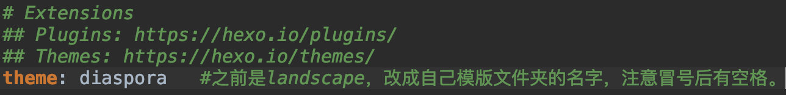
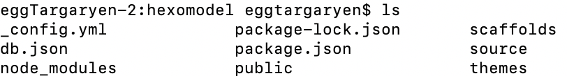
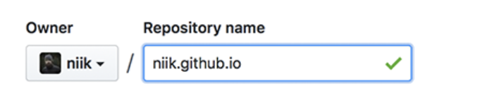

<!DOCTYPE html>
<html lang="" class="loading">
<head><meta name="generator" content="Hexo 3.8.0">
    <meta charset="UTF-8">
    <meta http-equiv="X-UA-Compatible" content="IE=edge,chrome=1">
    <meta name="viewport" content="width=device-width, minimum-scale=1.0, maximum-scale=1.0, user-scalable=no">
    <title>eggTargaryen</title>

    <meta name="apple-mobile-web-app-capable" content="yes">
    <meta name="apple-mobile-web-app-status-bar-style" content="black-translucent">
    <meta name="google" content="notranslate">
    <meta name="keywords" content="eggTargaryen,"> 
    <meta name="description" content="机器学习：
1、bias与variance的含义？
答案
2、Adaboost、GBDT与XGBoost的区别
深度学习：
1、梯度消失/爆炸原因，以及解决方法。
原因,，，，这个也ok
解决方法：,"> 
    <meta name="author" content="eggTargaryen"> 
    <link rel="alternative" href="atom.xml" title="eggTargaryen" type="application/atom+xml"> 
    <link rel="icon" href="/img/logo.png"> 
    <link rel="stylesheet" href="//cdn.jsdelivr.net/npm/gitalk@1/dist/gitalk.css">
    <link rel="stylesheet" href="/css/diaspora.css">
</head>
</html>
<body class="loading">
    <div id="loader"></div>
    <div id="single">
    <div id="top" style="display: block;">
    <div class="bar" style="width: 0;"></div>
    <a class="icon-home image-icon" href="javascript:;"></a>
    <div title="播放/暂停" class="icon-play"></div>
    <h3 class="subtitle">如何利用github建立个人博客</h3>
    <div class="social">
        <!--<div class="like-icon">-->
            <!--<a href="javascript:;" class="likeThis active"><span class="icon-like"></span><span class="count">76</span></a>-->
        <!--</div>-->
        <div>
            <div class="share">
                <a title="获取二维码" class="icon-scan" href="javascript:;"></a>
            </div>
            <div id="qr"></div>
        </div>
    </div>
    <div class="scrollbar"></div>
</div>
    <div class="section">
        <div class="article">
    <div class="main">
        <h1 class="title">如何利用github建立个人博客</h1>
        <div class="stuff">
            <span>十一月 01, 2018</span>
            
  <ul class="post-tags-list"><li class="post-tags-list-item"><a class="post-tags-list-link" href="/tags/github/">github</a></li><li class="post-tags-list-item"><a class="post-tags-list-link" href="/tags/hexo/">hexo</a></li></ul>


        </div>
        <div class="content markdown">
            <p>利用 <a href="https://hexo.io/" target="_blank" rel="noopener">Hexo</a>+ <a href="https://github.com" target="_blank" rel="noopener">github</a> 快速建立静态个人博客。</p>
<h3 id="首先需要安装npm"><a href="#首先需要安装npm" class="headerlink" title="首先需要安装npm"></a>首先需要安装npm</h3><figure class="highlight bash"><table><tr><td class="gutter"><pre><span class="line">1</span><br></pre></td><td class="code"><pre><span class="line">$ brew install npm</span><br></pre></td></tr></table></figure>
<p> npm安装方法有很多，没有brew指令的可以尝试其他安装方法。</p>
<h3 id="第二步，安装hexo"><a href="#第二步，安装hexo" class="headerlink" title="第二步，安装hexo"></a>第二步，安装hexo</h3><figure class="highlight bash"><table><tr><td class="gutter"><pre><span class="line">1</span><br></pre></td><td class="code"><pre><span class="line">$ npm i -g hexo</span><br></pre></td></tr></table></figure>
<h3 id="第三步，创建hexo工作空间"><a href="#第三步，创建hexo工作空间" class="headerlink" title="第三步，创建hexo工作空间"></a>第三步，创建hexo工作空间</h3><figure class="highlight bash"><table><tr><td class="gutter"><pre><span class="line">1</span><br><span class="line">2</span><br></pre></td><td class="code"><pre><span class="line">$ mkdir hexoBlog</span><br><span class="line">$ <span class="built_in">cd</span> hexoBlog</span><br></pre></td></tr></table></figure>
<h3 id="第四步，初始化hexo环境"><a href="#第四步，初始化hexo环境" class="headerlink" title="第四步，初始化hexo环境"></a>第四步，初始化hexo环境</h3><figure class="highlight bash"><table><tr><td class="gutter"><pre><span class="line">1</span><br><span class="line">2</span><br></pre></td><td class="code"><pre><span class="line">$ <span class="built_in">cd</span> hexoBlog</span><br><span class="line">$ hexo init</span><br></pre></td></tr></table></figure>
<p>注意：一定要在空文件夹中执行hexo init指令，否则会报错。<br>执行完后会生成一些文件，结构如下：<br></p>
<p>接着需要去<a href="https://hexo.io/themes/" target="_blank" rel="noopener">hexo/themes</a>选一个自己喜欢的主题，并将该主题下载到themes文件夹下<br>themes文件夹下已经存在一个默认的模版landscape。</p>
<p>这里可能会遇到一个问题就是如何下载模版？</p>
<p>通常先预览模版，然后找他们的github主页一般都会有该模版的仓库，点进去里面会教你如何下载。不过大部分都是执行如下指令：<br><figure class="highlight bash"><table><tr><td class="gutter"><pre><span class="line">1</span><br><span class="line">2</span><br><span class="line">3</span><br></pre></td><td class="code"><pre><span class="line">$ <span class="built_in">cd</span> themes</span><br><span class="line">$ git <span class="built_in">clone</span> https://github.com/Fechin/hexo-theme-diaspora.git diaspora</span><br><span class="line">格式说明：git <span class="built_in">clone</span> 模版库链接 文件夹名</span><br></pre></td></tr></table></figure></p>
<p>当然也有不是这样的，具体操作就看他们的github吧</p>
<p>下载好模版后需要修改一下配置文件：hexoBlog/_config.yml,将theme一项修改为自己的主题。<br></p>
<h3 id="第五步，利用模版生成静态网页。"><a href="#第五步，利用模版生成静态网页。" class="headerlink" title="第五步，利用模版生成静态网页。"></a>第五步，利用模版生成静态网页。</h3><figure class="highlight bash"><table><tr><td class="gutter"><pre><span class="line">1</span><br><span class="line">2</span><br></pre></td><td class="code"><pre><span class="line">回到hexoBlog文件夹下，执行下面的指令</span><br><span class="line">$ hexo generate</span><br></pre></td></tr></table></figure>
<p>执行完后又会生成一些文件，结构如下：<br><br>可以看到多了一些文件，其中public中就是存放静态网页的文件夹。<br>之后上传到github上的就是该文件夹下的文件。</p>
<h3 id="第六步-optional-启动hexo本地服务，可以在本地查看网页效果。"><a href="#第六步-optional-启动hexo本地服务，可以在本地查看网页效果。" class="headerlink" title="第六步(optional),启动hexo本地服务，可以在本地查看网页效果。"></a>第六步(optional),启动hexo本地服务，可以在本地查看网页效果。</h3><figure class="highlight bash"><table><tr><td class="gutter"><pre><span class="line">1</span><br></pre></td><td class="code"><pre><span class="line">$ hexo server</span><br></pre></td></tr></table></figure>
<p>下面会显示一个本地链接，点开该链接即可查看网页。</p>
<p>###第七步，new repository<br>到github上新建一个repository，name一定是：自己的github名.github.io<br>  如下图所示：<br></p>
<p>打完名字其他不用管直接create repository 即可。</p>
<p>在下面的网页上点击ssh，然后复制该链接。</p>
<h3 id="第八步，创建SSH-key"><a href="#第八步，创建SSH-key" class="headerlink" title="第八步，创建SSH key"></a>第八步，创建SSH key</h3><figure class="highlight bash"><table><tr><td class="gutter"><pre><span class="line">1</span><br></pre></td><td class="code"><pre><span class="line">$ ssh-keygen -t rsa -C <span class="string">"你的github邮箱"</span></span><br></pre></td></tr></table></figure>
<p>然后连续按三个enter即可。</p>
<p>接着会提示你public key保存在了哪里，然后打开id_rsa.pub<br>将里面的内容复制出来。到你的github主页上添加ssh，步骤：点击右上角github头像-&gt;点击settings-&gt;SSH and GPG keys-&gt;new SSH key -&gt;随便输入名字，然后将刚复制的内容copy到下面确定即可。<br>可以执行如下指令查看是否成功。<br><figure class="highlight bash"><table><tr><td class="gutter"><pre><span class="line">1</span><br></pre></td><td class="code"><pre><span class="line">$ ssh -T git@github.com</span><br></pre></td></tr></table></figure></p>
<p>成功后执行如下指令制定要更新的仓库。<br><figure class="highlight bash"><table><tr><td class="gutter"><pre><span class="line">1</span><br></pre></td><td class="code"><pre><span class="line">$ git remote add origin git@github.com:eggTargaryen/eggtargaryen.github.io.git</span><br></pre></td></tr></table></figure></p>
<p>origin后面的链接即第七步点击ssh生成的链接。</p>
<p>接着需要修改_config.yml文件<br><figure class="highlight bash"><table><tr><td class="gutter"><pre><span class="line">1</span><br><span class="line">2</span><br><span class="line">3</span><br><span class="line">4</span><br><span class="line">5</span><br><span class="line">6</span><br></pre></td><td class="code"><pre><span class="line"><span class="comment"># Deployment</span></span><br><span class="line"><span class="comment">## Docs: https://hexo.io/docs/deployment.html</span></span><br><span class="line">deploy:</span><br><span class="line">  <span class="built_in">type</span>: git</span><br><span class="line">  repo: git@github.com:niik/niik.github.io.git</span><br><span class="line">  branch: master</span><br></pre></td></tr></table></figure></p>
<h3 id="第九步，将静态网页提交到github"><a href="#第九步，将静态网页提交到github" class="headerlink" title="第九步，将静态网页提交到github"></a>第九步，将静态网页提交到github</h3><figure class="highlight bash"><table><tr><td class="gutter"><pre><span class="line">1</span><br></pre></td><td class="code"><pre><span class="line">$ hexo d</span><br></pre></td></tr></table></figure>
<p>指令执行完后过几秒钟，在浏览器输入网址访问自己的blog主页即可显示，网址即第七步自己填入的name。</p>
<h3 id="后续要是需要添加新的文章-只要编写-md文件然后放入source-posts文件夹下，然后执行如下几条命令"><a href="#后续要是需要添加新的文章-只要编写-md文件然后放入source-posts文件夹下，然后执行如下几条命令" class="headerlink" title="后续要是需要添加新的文章 只要编写.md文件然后放入source/_posts文件夹下，然后执行如下几条命令"></a>后续要是需要添加新的文章 只要编写.md文件然后放入source/_posts文件夹下，然后执行如下几条命令</h3><figure class="highlight bash"><table><tr><td class="gutter"><pre><span class="line">1</span><br><span class="line">2</span><br><span class="line">3</span><br></pre></td><td class="code"><pre><span class="line">$ hexo clean</span><br><span class="line">$ hexo g</span><br><span class="line">$ hexo d</span><br></pre></td></tr></table></figure>
<p>即可完成博客的更新。</p>
<h3 id="md文件怎么写？"><a href="#md文件怎么写？" class="headerlink" title="md文件怎么写？"></a>md文件怎么写？</h3><p>可以自己手写，也可以使用<a href="https://typora.io" target="_blank" rel="noopener">typora</a>来快速高效的写md文件。</p>
<h3 id="最后，感谢invincible的技术支持。"><a href="#最后，感谢invincible的技术支持。" class="headerlink" title="最后，感谢invincible的技术支持。"></a>最后，感谢<a href="https://invincible1900.github.io" target="_blank" rel="noopener">invincible</a>的技术支持。</h3><p></p>

            <!--[if lt IE 9]><script>document.createElement('audio');</script><![endif]-->
            <audio id="audio" loop="1" preload="auto" controls="controls" data-autoplay="false">
                <source type="audio/mpeg" src="">
            </audio>
            
                <ul id="audio-list" style="display:none">
                    
                        <li title="0" data-url="http://music.163.com/song/media/outer/url?id=21843111"></li>
                    
                </ul>
            
        </div>
        
    <div id="gitalk-container" class="comment link" data-ae="false" data-ci="389843d8e8f4a64fb373" data-cs="4aa2f626551b60a563b935cf7f7c5273b68b28aa" data-r="blogissue" data-o="eggtargaryen" data-a="eggtargaryen" data-d="false">查看评论</div>


    </div>
    
</div>


    </div>
</div>
</body>
<script src="//cdn.jsdelivr.net/npm/gitalk@1/dist/gitalk.min.js"></script>
<script src="//lib.baomitu.com/jquery/1.8.3/jquery.min.js"></script>
<script src="/js/plugin.js"></script>
<script src="/js/diaspora.js"></script>
<link rel="stylesheet" href="/photoswipe/photoswipe.css">
<link rel="stylesheet" href="/photoswipe/default-skin/default-skin.css">
<script src="/photoswipe/photoswipe.min.js"></script>
<script src="/photoswipe/photoswipe-ui-default.min.js"></script>

<!-- Root element of PhotoSwipe. Must have class pswp. -->
<div class="pswp" tabindex="-1" role="dialog" aria-hidden="true">
    <!-- Background of PhotoSwipe. 
         It's a separate element as animating opacity is faster than rgba(). -->
    <div class="pswp__bg"></div>
    <!-- Slides wrapper with overflow:hidden. -->
    <div class="pswp__scroll-wrap">
        <!-- Container that holds slides. 
            PhotoSwipe keeps only 3 of them in the DOM to save memory.
            Don't modify these 3 pswp__item elements, data is added later on. -->
        <div class="pswp__container">
            <div class="pswp__item"></div>
            <div class="pswp__item"></div>
            <div class="pswp__item"></div>
        </div>
        <!-- Default (PhotoSwipeUI_Default) interface on top of sliding area. Can be changed. -->
        <div class="pswp__ui pswp__ui--hidden">
            <div class="pswp__top-bar">
                <!--  Controls are self-explanatory. Order can be changed. -->
                <div class="pswp__counter"></div>
                <button class="pswp__button pswp__button--close" title="Close (Esc)"></button>
                <button class="pswp__button pswp__button--share" title="Share"></button>
                <button class="pswp__button pswp__button--fs" title="Toggle fullscreen"></button>
                <button class="pswp__button pswp__button--zoom" title="Zoom in/out"></button>
                <!-- Preloader demo http://codepen.io/dimsemenov/pen/yyBWoR -->
                <!-- element will get class pswp__preloader--active when preloader is running -->
                <div class="pswp__preloader">
                    <div class="pswp__preloader__icn">
                      <div class="pswp__preloader__cut">
                        <div class="pswp__preloader__donut"></div>
                      </div>
                    </div>
                </div>
            </div>
            <div class="pswp__share-modal pswp__share-modal--hidden pswp__single-tap">
                <div class="pswp__share-tooltip"></div> 
            </div>
            <button class="pswp__button pswp__button--arrow--left" title="Previous (arrow left)">
            </button>
            <button class="pswp__button pswp__button--arrow--right" title="Next (arrow right)">
            </button>
            <div class="pswp__caption">
                <div class="pswp__caption__center"></div>
            </div>
        </div>
    </div>
</div>


</html>